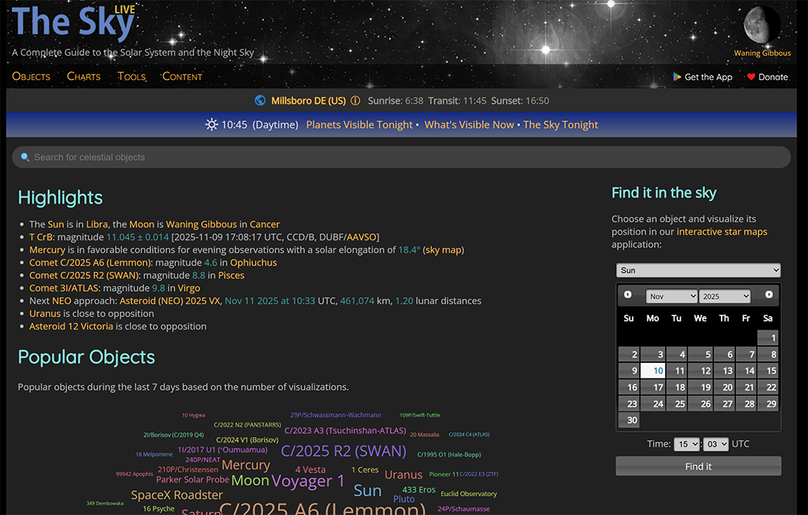
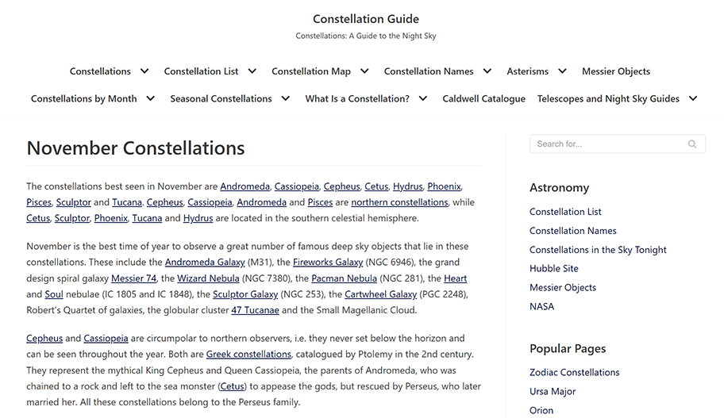

Color Theory Article
A hobby of mine is astronomy, especially constellations. I find the science fascinating, but ultimately intimidating. While I own a physical book, I occasionally find myself searching for a site for the information I wish to reference. There are no shortages to choose from, but for this article I will reference two in particular.
The first site I find myself drifting toward is The Sky Live. It’s made by an individual named Iacopo from Northern Italy, according to the about page, and has been active since 2013. It features daily updates in in-depth information.

The more I look at it and remember color theory the more I appreciate it. The color scheme is predictable for a night-sky viewing guide, but that is what makes it work. The black background color helps set the mood, with the orange-yellow and light green-blue header text good at grabbing attention. The default text color being a light gray helps provide the necessary contrast with it still being readable. I think my only complaint is that the site’s logo color doesn’t align with the site colors. “The Sky” I believe is more forgivable and a pleasant blue, but the “Live” portion feels more out of place.
My only other critique would be the gradient for the daily (or more accurately, nightly) events. I appreciate the aesthetic intention, the sky is a natural gradient, but ultimately find it more distracting than eyecatching. I believe the issue lies with the text, specifically its color, but that is a rather common problem with gradients in my experience.
In contrast, another constellation site I found, Constellation Guide is frankly on the boring side. As a blog, I had to jump to the last page to find the about– the author doesn’t identify themself by name, but it was started January 1st in 2011 by a self-described amateur astronomer. They wished to share their interest, while simultaneously function as a personal reference for discoveries and interests. Its latest update is November 1st, 2025, so it’s still fairly active. Due to the site’s nature as a hobby blog, it is a plain black and white color scheme. This is of course not an inherent problem, it is perfectly functional. I can see other people finding this site easier to use, but its minimalistic approach does not make it the most fun to navigate. The hyperlink color is also very close to the default text color. If it weren’t for the underline I believe it could be easily missed. I believe that would benefit from a color change, but the rest I can accept as the author prioritizing usability over aesthetic.

As these are both hobby sites I do not wish to be too hard on them. The information they provide is quite thorough and as a fellow hobbyist, I greatly appreciate it. In the end it is their site and they are free to use how many or how little color they desire. If I were to make one myself, however, I believe I’d follow The Sky view’s example more than Constellation Guide’s. I would file The Sky View under the color scheme I like, and Constellation Guide as my dislike.